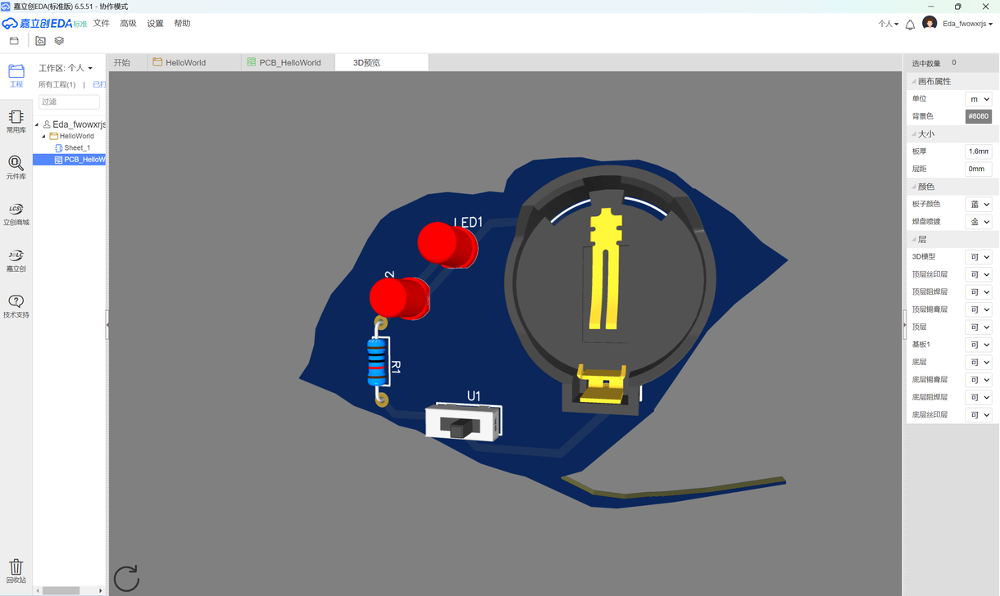
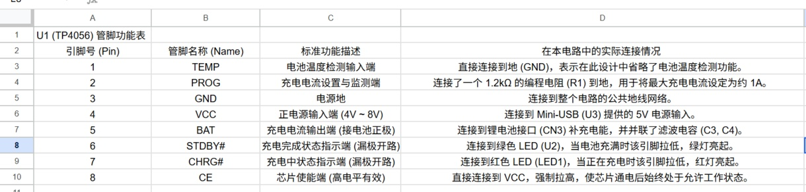
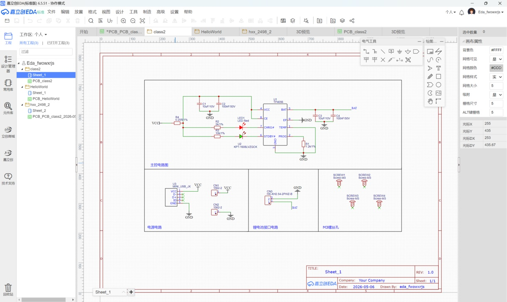
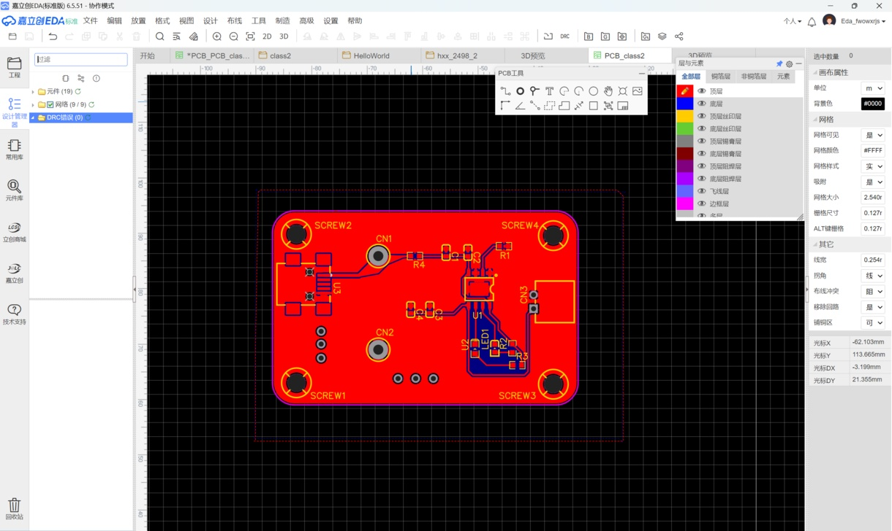
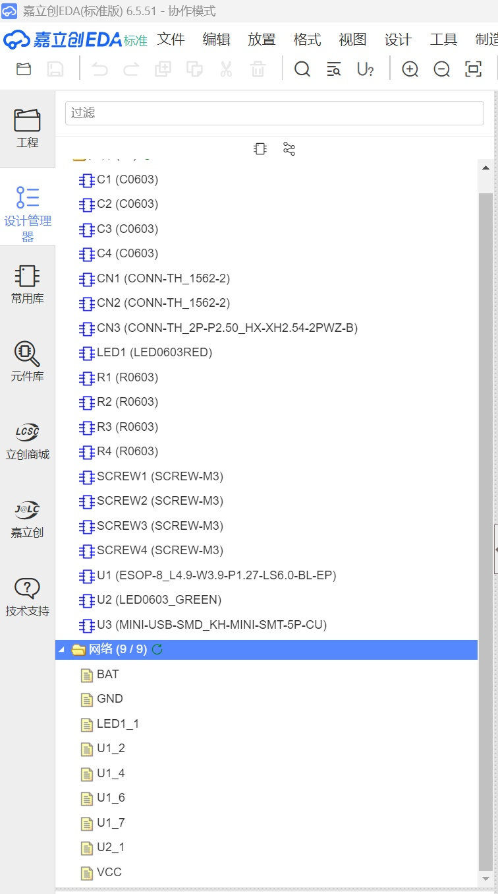

从代码到实物：我的创客练习日志
本日志记录了从机械结构设计、减材制造、电子元器件焊接，再到嵌入式软件开发与物联网控制的完整创客实践过程。
任务1：从3D建模到3D打印 (致敬交大130周年校庆)
在这个任务中，我使用 SOLIDWORKS 软件进行了西南交通大学校门的3D建模设计，随后使用 拓竹 A1 mini 3D打印机将其转化为实物模型。以此礼赞西南交大130年校庆。


任务2：电子焊接练习
本次任务完成了一块LED闪灯电路板的焊接作业。通过练习，我掌握了直插式元器件的焊接技巧，提升了焊接水平，为后续的嵌入式硬件开发打下了基础。


任务3：嵌入式练习 (ESP32)
使用 ESP32 系列开发板进行基础的 GPIO 控制与串口通信实验。
1. HelloWorld (串口通信)
初始化串口通信，使开发板向电脑终端持续输出 "hello world"。
void setup() {
Serial.begin(9600); // 设置波特率为9600
}
void loop() {
Serial.println("hello world");
delay(500); // 延时500毫秒
}
2. 数字输出 (控制LED闪烁)
使用 digitalWrite() 函数控制特定引脚输出高低电平，驱动面包板上的外接LED灯闪烁。
#define LEDPIN 40
void setup() {
pinMode(LEDPIN, OUTPUT); // 设置引脚为输出模式
}
void loop() {
digitalWrite(LEDPIN, HIGH); // 点亮LED
delay(100);
digitalWrite(LEDPIN, LOW); // 熄灭LED
delay(100);
}
3. 数字输入 (读取按键状态)
使用自恢复按键开关与下拉电阻构建电路，通过 digitalRead() 读取按键状态并在串口绘图器中观察电平变化。
#define BUTTONPIN 40
int in;
void setup() {
pinMode(BUTTONPIN, INPUT); // 设置引脚为输入模式
Serial.begin(9600);
}
void loop() {
in = digitalRead(BUTTONPIN); // 读取按键电平
Serial.println(in); // 输出到串口
delay(100);
}


4. 模拟输出 (PWM 呼吸灯)
使用 analogWrite() 函数输出不同占空比的 PWM 信号，实现 LED 亮度的渐变效果（呼吸灯）。
#define APIN 40
void setup() {
analogWriteResolution(APIN, 10); // 设置10位分辨率
}
void loop() {
analogWrite(APIN, 1023); delay(100);
analogWrite(APIN, 768); delay(100);
analogWrite(APIN, 512); delay(100);
analogWrite(APIN, 256); delay(100);
analogWrite(APIN, 128); delay(100);
analogWrite(APIN, 64); delay(100);
}
5. 模拟输入 (光敏电阻读取环境光)
通过光敏电阻组成分压电路，使用 analogRead() 读取环境光强度对应的模拟电压值。

任务4：物联网与高级控制
6. WiFi Web Server (网页控制LED)
利用 ESP32 强大的无线功能接入局域网，建立一个简单的 HTTP Web 服务器，通过手机或电脑浏览器直接控制硬件板载的 LED 灯。


7. 扩展：舵机控制与 WiFi 远程舵机
结合 ESP32Servo 库生成精准的 50Hz PWM 信号来驱动舵机旋转。进一步，将 Web Server 的概念扩展至舵机控制，实现了网页端发送 GET 请求（如
/R 和 /L）来控制物理舵机向左或向右转动，完成了从代码到机械动作的物联网闭环。
// 截取核心的 Web Server 舵机控制逻辑
if (currentLine.endsWith("GET /R")) {
int duty0 = 4096 * 0.5 / 20;
ledcWrite(LED_PIN, duty0); // 舵机归零
}
if (currentLine.endsWith("GET /L")) {
int duty180 = 4096 * 2.5 / 20;
ledcWrite(LED_PIN, duty180); // 舵机旋转180度
}任务5：EDA电路板设计实践
在熟练掌握基础硬件后，我进一步学习了使用嘉立创EDA进行专业PCB电路板设计的全流程，完成了两个具有实际应用价值的硬件项目。
项目一：130周年校庆专属LED电子徽章 (AI辅助设计)
结合西南交大130周年校庆，我运用AI辅助生成了学校具有代表性的“银杏叶”轮廓，并以此为基础设计了一款LED发光徽章。设计中严格遵循了硬件布线规范：包含关键的元器件，精确控制整体尺寸为 61.596mm × 41.402mm，走线宽度设置为1mm，且所有导线拐角均采用标准的45°走线。


项目二：TP4056 锂电池充电管理电路设计
本项目旨在复刻并独立设计一个实用的锂电池充电模块。核心芯片选用带有底部散热片的 TP4056。项目流程涵盖了从元器件选型、数据手册研读、原理图绘制到PCB布局铺铜的完整环节。
- 原理图设计与功能分析：仔细研读数据手册后绘制了原理图，整理了管脚功能表，并深入分析了外围电阻的限流/编程选型以及电容的滤波作用。设计中规范使用了网络标签（如BAT），并调用了扩展库中的 MINI_USB 封装。
- PCB布局布线：追求布局合理、信号走向清晰，将输入输出接口规划在电路板边缘。采用圆角矩形边框使外观更紧凑美观。布线时，VCC电源线进行了适当的实线填充以增加载流能力，并对全板进行了 GND 网络的铺铜处理。
- 工程检验与输出：在原理图与PCB绘制完成后，严格执行了网络检查与 DRC（设计规则检查）优化走线，最终顺利导出可用于制造的 Gerber 文件。




任务6：激光切割与制造实践
项目：校庆元素定制书签
除了增材制造（3D打印）与电路板设计，我还深入体验了减材制造的工艺流程。在这个项目中，我使用 EagleWorks 激光切割软件，设计并制作了一款带有西南交通大学标志性元素的木质（或亚克力）书签，作为校庆的专属纪念周边。
- 矢量图设计与排版：在软件中，我精细调整了交大校门轮廓的矢量路径以及“西南交通大学”等字体的线条走向，确保封闭路径的完整性，避免在实际切割中出现断线或掉块的现象。
- 加工参数调试：为了达到最佳的切割与雕刻效果，我针对性地配置了激光设备的参数。如图所示，主光束的最小与最大功率均设定为
63.0%，切割速度设定为23.00 mm/s。这些参数的调优确保了激光能够顺利切透材料，同时边缘平滑且不会产生严重的烧焦痕迹。 - 路径优化：在数据输出前，开启了“路径优化”功能，缩短了激光头的空切距离，有效提高了机器的工作效率。